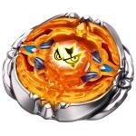

Flash Sagittario 230WD
| Flash Sagittario 230WD | |
|  | |
| Number: | BB-126 |
|---|---|
| System: | Metal Fight Beyblade |
| Type: | Stamina |
Contents
Flash Sagittario 230WD is the last 4D release, as well as the last regular release for Metal Fight Beyblade before the beginning of Beyblade Zero-G.
Face: Sagittario II
The Face of this Beyblade depicts Sagittarius, one of the Zodiac signs. In addition to the original mark design, a bright explosion was drawn behind the two eyes of Sagittario, to create a link with the 4D Metal Wheel it is released with, Flash.
4D Clear Wheel: Sagittario II
- Weight: 3.3 grams
It is possible to observe many bows and arrows designed into the Sagittario II 4D Clear Wheel. It is neon orange in colour.
4D Metal Wheel: Flash
- Weight: 45.6 grams
In coordination with the theme of the Sagittario II 4D Clear Wheel, Flash is an assembly of many bow-and-arrow illustrations. The gimmick used for Flash's mode change is not new at all, despite TAKARA-TOMY's designers having more creative ideas originally[1].
Metal Frame
Flash's Metal Frame resembles the Flame Metal Wheel a lot. It is rather oval, and half of its sides consist in a large and very thick slope. Its underside is mostly empty however, which takes away most of its potential weight.
Core
This piece looks very similar to its Metal Frame, however there is much less relief in it: while the Metal Frame has slopes, Flash's Core is completely flat. This detail means that its underside is entirely filled though, otherwise it could suffer from breakage issues.
- Stamina Mode
In Stamina Mode, the two bow-and-arrow from the Metal Frame are perpendicular to those of the Core. This mode creates a four-winged shape.
- Attack Mode
Once the Metal Frame is rotated by 90°, the Attack Mode is achieved, where the two bow-and-arrow designs of the Core are exactly under the Metal Frame's. The resulting shape of the Flash 4D Metal Wheel is one that is exaggerately elongated. However, most of Flash's weight becomes focused on two distinctive sides, which conveys to it a substantial Flywheel Effect, and since both metal parts are one on top of the other, the 4D Metal Wheel becomes much denser and the weight is shifted from four sides to two sides.
This mode change is possible because of the existence of some small walls on the underside of the Metal Frame.
Track: 230
| Weight: | 4.1 grams | Maximum Width: | 23.0 mm | Minimum Width: | 17.0 mm | Full Height: | 23.0 mm |
230 is the tallest Track released thus far. 230 is part of the Maximum Series, and is labeled as the Maximum Height for Tracks. 230 has six indents near the top of the Track that sharpen downwards to about the half of the Track. 230 is rounder and thicker than regular Tracks with no gimmicks in order to protect it structurally as it comes into regular contact with opposing Wheels. Its round and smooth shape results in significantly less recoil than if it were based on the traditional hexagonal Track shape. Since 230 is so tall, it can wobble at great lengths for extra Stamina, defeating various Stamina customizations with lower Tracks. From a defensive viewpoint, it uses its height as an advantage to protect itself from low incoming Attacks, by protecting the Metal Wheel from major contact while using the reinforced plastic to absorb most of the shock. As a result of this, 230 can defeat most low Attack customizations under the 120 height when paired with other top-tier Defense parts.
230 also has some notable weaknesses, however. As a Defense Track, 230 is extremely susceptible to tall Track Attack types in the opposite spin direction such as MF Lightning L Drago BD145LRF and MF Gravity Perseus BD145RF. Additionally, TH170 at 220 height is successful against 230-based customizations, while also offering height-based versatility at the same time.
This play of good defense against low Beyblades and weakness against high Attackers is highly due to the fact that low tops hit it exactly in its center of gravity. Most of the weight is obviously at the top of the Beyblade using 230, however the Track itself also possess a considerable mass, and the sum of those weights brings the center of gravity exactly around where 120-based Beyblades attack. Usually, the lower the center of gravity, the better, but as long as it is targeted, the object retains a certain balance. If it gets hit away from that center of gravity vertically, then the object will lose its stability, which is what happens with 230.
Use in Stamina customization
230 can be put to use in the Stamina customization Scythe Bull 230D. D is a superior choice for 230 because it retains balance more easily than WD as WD wobbles very easily.
Bottom: Wide Defense
| Weight: | 0.7 gram | Full Width: | 15.53 mm | Tip Width: | 14.17 mm | Full Height: | 8.92 mm | Tip Height: | 6.75 mm | Tip Angle: | 40° |
Wide Defense, as its name implies is one of the widest of the ?Defense? series of Bottoms (D, SD, WD, PD, EWD). This brings numerous advantages, but also some disadvantages when compared to the other ?Defense? Bottoms, specifically D. The advantages include its ability for abnormally long precession times due to its massive width that reaches the edge of the Bottom's perimeter. This allows it to wobble at a significantly larger angle for a longer period of time than D, and at a much lower spin rate. However, depending on the position of the Beyblade using WD and the spin rate of the opponent, this can be disadvantageous because of how easy it becomes to knock over the precessing WD custom. This low spin rate towards the end of the battle is created because in the process of wobbling at such a large angle, more friction is made with the stadium floor, thus decreasing its Stamina. Nevertheless, this more often an advantage than it is a disadvantage.
Newer parts such as CS, EDS and B:D have overshadowed WD to some degree: CS and EDS due to their ability to be paired with the popular BD145 Track without scraping, and B:D because of its height and even longer precession times, but WD is still one of the best pure Stamina Bottoms available. However, when selecting high Tracks such as TH170 and 230, WD's tendency to wobble at larger angles should be kept in mind, as its extreme precession can often become problematic.
Although the name suggests Defensive characteristics, WD does not possess any inherent defensive qualities. However, its proficiency can be increased significantly when facing left-spin Attackers through the utilization of the Weak Shooting technique.
Use in Stamina customization
WD is arguably the best of the ?Defense? series of Bottoms, and its effectiveness can be utilized in the custom Phantom Bull AD145WD.
Other Versions
No other versions of this Beyblade were released.
Gallery
-
Flash Sagittario Box Front View
-
Flash Sagittario Box Back View
-
Flash Sagittario Box Side View One
-
Flash Sagittario Box Top View